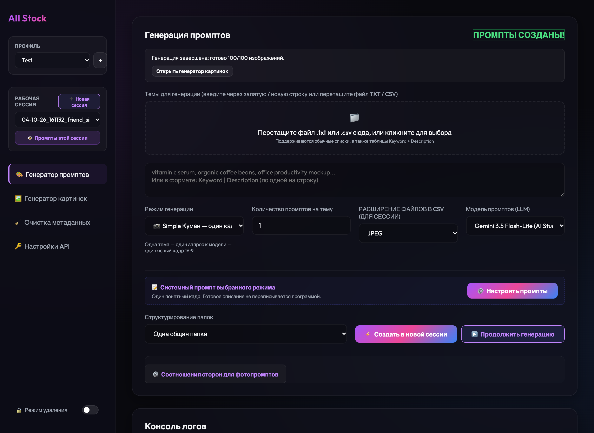
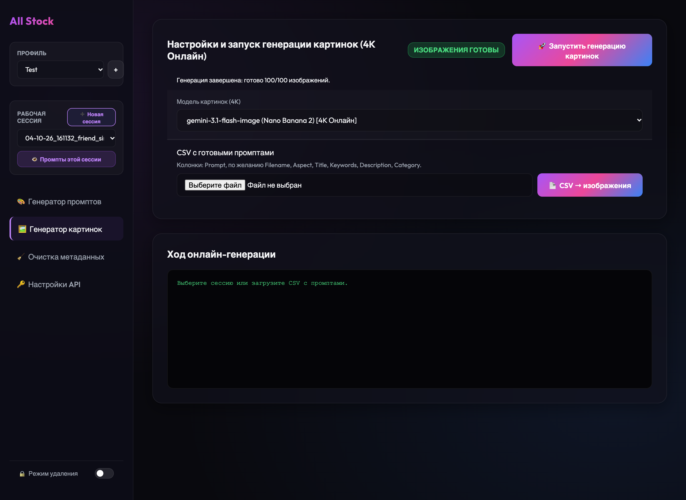
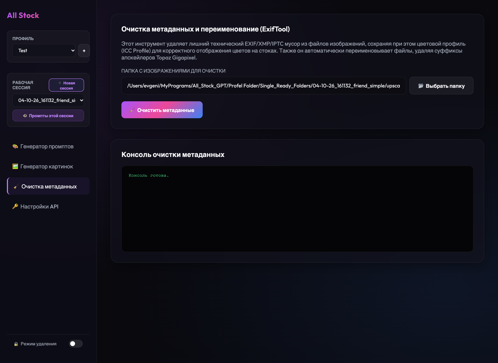
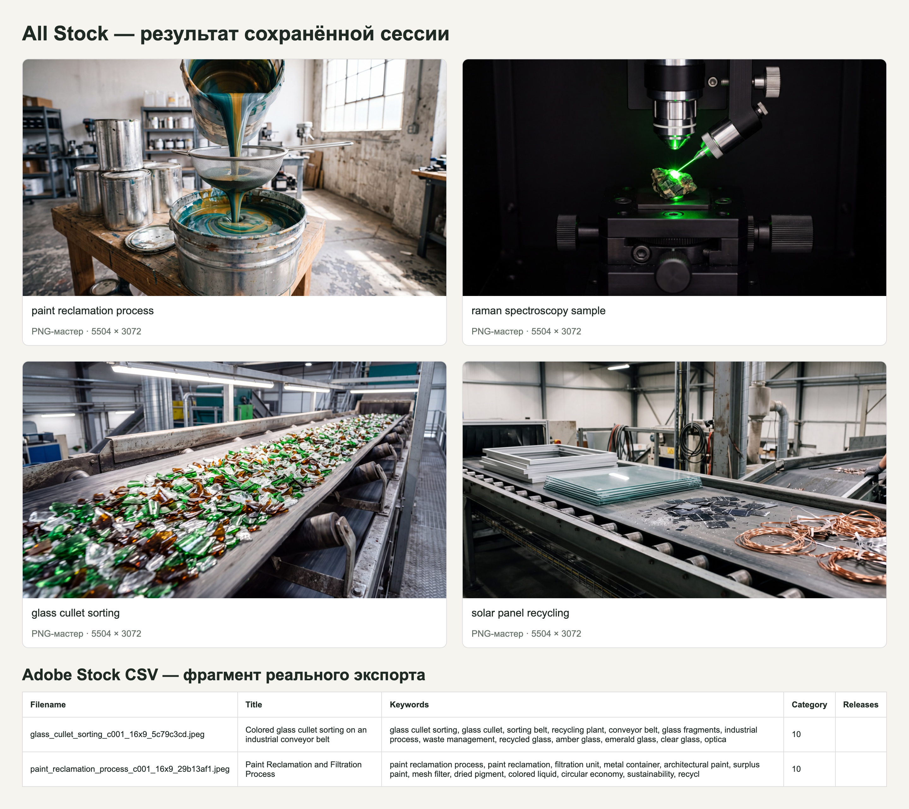

ALL STOCK / АВТОМАТИЗАЦИЯ ПРОИЗВОДСТВА СТОКОВОГО КОНТЕНТА
Автоматизированная генерация контента для фотостоков
All Stock — приложение для автоматизированного создания изображений с целью их продажи на фотостоках. Система преобразует исходные темы и идеи в готовые промпты, генерирует изображения через API в высоком разрешении и подготавливает названия, описания и ключевые слова с учётом требований разных площадок.
В одном приложении объединены три последовательных этапа: генерация промптов и метаданных, создание изображений и техническая очистка файлов. Каждый этап имеет собственную вкладку и при необходимости может использоваться самостоятельно.
Работающее приложение · Реальные результаты генерации

01 / ЗАДАЧА
Автоматизировать производство изображений для фотостоков
Создание больших партий изображений для продажи на фотостоках требует не только генерации самих картинок. Необходимо подготовить качественные промпты, составить метаданные, учесть требования каждой площадки, правильно организовать файлы и подготовить их к загрузке.
При ручной работе эти операции отнимают значительное время, особенно когда речь идёт о десятках и сотнях изображений.
Задача — объединить все этапы в единую систему, способную автоматизировать массовое создание стокового контента, сохранив гибкость настроек и возможность управлять каждым этапом отдельно.
02 / РЕШЕНИЕ
Полный цикл генерации в одном приложении
Работа начинается с исходных тем: их можно вводить вручную, загружать готовыми списками или дополнять визуальным контекстом для более точной генерации. Темы также могут поступать из отдельного приложения [Stock Insights](https://evgeny-meleshkevich.github.io/work/stock-insights/?lang=ru), предназначенного для исследования рынка и поиска перспективных направлений.
На основе полученных заданий языковая модель через API создаёт промпты и одновременно формирует названия, описания и ключевые слова с учётом требований выбранных фотостоков.
Затем генератор изображений обрабатывает подготовленные промпты через API и создаёт изображения в высоком разрешении. Завершающий этап — очистка лишних технических метаданных, подготовка имён файлов и формирование готового комплекта изображений и CSV для последующей загрузки на площадки.
Единый процесс с возможностью раздельной работы
Приложение состоит из трёх встроенных модулей: генератора промптов, генератора изображений и инструмента очистки метаданных. В интерфейсе каждый расположен на отдельной вкладке.
Модули рассчитаны на последовательную работу, но могут использоваться независимо. Например, можно загрузить собственный CSV с готовыми промптами и сразу приступить к генерации изображений либо обработать изображения, созданные в других программах.
Встроенный модуль очистки удаляет лишние EXIF, XMP и IPTC, сохраняя необходимый цветовой профиль ICC. Также предусмотрено удаление служебных суффиксов из имён файлов.


03 / ИНЖЕНЕРИЯ
Ключевые решения при разработке
04 / РЕЗУЛЬТАТ
От списка тем до готовой партии стокового контента
Создано полноценно работающее приложение, автоматизирующее подготовку промптов, генерацию изображений, создание метаданных и техническую обработку файлов.
В одной из сохранённых рабочих сессий успешно сгенерировано 100 PNG-изображений. Представленные примеры имеют разрешение 5504 × 3072 пикселя. Для изображений также сформированы метаданные и отдельные CSV-файлы под требования фотостоков.
На странице представлены реальные результаты генерации и фрагмент подготовленного CSV для Adobe Stock.

Проверка работоспособности
Работа приложения подтверждена 21 автоматическим тестом, охватывающим ключевые сценарии генерации, работу с API, подготовку промптов и обработку ключевых слов.
Дополнительно проведены неоднократные ручные проверки всех основных модулей, настроек и полного процесса создания изображений. Работоспособность подтверждена реальными сессиями генерации и сохранёнными результатами.
05 / ТЕХНОЛОГИИ